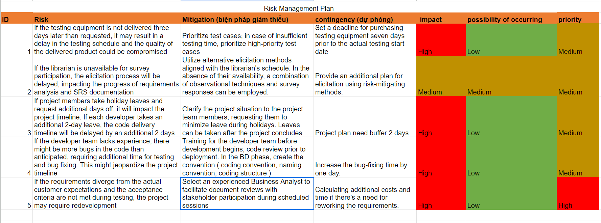
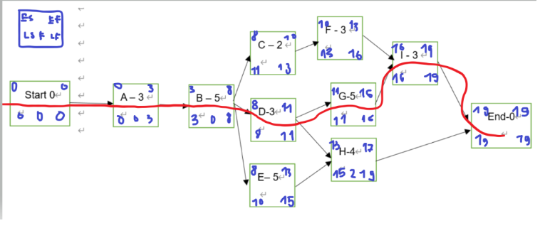

Hãy nhìn vào các dự án mà bạn đang tham gia, đã từng tham gia hoặc các dự án xung quanh bạn. Chọn một dự án trong lĩnh vực học tập của bạn tại FU (ví dụ: dự án phần mềm cho SE), đưa ra các giải pháp hoặc câu trả lời cho các yêu cầu sau dựa trên sự hiểu biết của bạn về dự án và các giả định liên quan.
Mô tả chi tiết dự án trong đó bạn cần đề cập rõ ràng đến các đặc điểm chính:
Theo bạn dự án đang sử dụng loại hình tổ chức nào và loại hình tổ chức nào bạn nghĩ nên hoặc nên được sử dụng, kèm theo các lý do? Cung cấp các lý do liên quan cho câu trả lời của bạn.
Xác định ít nhất 3 rủi ro đáng kể mà bạn nghĩ rằng dự án có thể đối mặt. Với mỗi rủi ro, hãy xác định khả năng xảy ra của nó (xác suất) và mức độ ảnh hưởng nếu nó xảy ra. Tạo hệ thống chấm điểm của riêng bạn cho xác suất và mức độ ảnh hưởng. Bạn có thể sử dụng mức Độ cao-Trung bình-Thấp; có thể sử dụng các giá trị số hoặc phần trăm. Đưa ra một phản hồi cho mỗi rủi ro này.
Giả sử rằng bạn đã xác định và ước tính lịch trình dự án với các hoạt động cấp cao sau đây:
a) Sử dụng kỹ thuật phân tích đường găng để xác định thời gian tối thiểu hoàn thành dự án này
b) Trong tuần thứ 8, bạn đang thực hiện hoạt động B và phát hiện rằng cần tăng tốc lịch trình dự án để khôi phục 3 tuần bị trễ. Đưa ra 2 giải pháp kèm theo giải thích và giả định (nếu cần) để đạt được điều đó (cách giải pháp giúp ích và những khó khăn/tác động đối với dự án).
Nhóm dự án của bạn đã hoàn thành khối lượng công việc tương đương $3.000 và đã chi tiêu $4.000 cho đến nay. Giả sử bạn đã lập ngân sách $5.000 cho công việc dự kiến hoàn thành. Ban đầu, nhóm đã ước tính ngân sách dự án là $9.000 và dự án cần 12 tháng để hoàn thành. Tính toán và đưa ra các tính toán và nhận xét của bạn về tình trạng hiện tại của dự án, và các dự báo để hoàn thành dự án về mặt chi phí và tiến độ.
FPT Student Learning Management (SLM) System
The purpose of the SLM system is to facilitate efficient management and tracking of learning progress for both professors and students in FPT university. Key objectives include:
The project is scheduled to be completed within 4 months, encompassing all phases of the software development life cycle, from requirements gathering to deployment.
The primary customer and sponsor of the project is FPT University.
The to-be potential customer of the project is the academic institution or educational organization that will utilize the Student Learning Management System. This could be a university, college, or any institution offering academic courses.
Waterfall model:
Hệ thống Quản lý Học tập Sinh viên FPT (SLM)
Mục đích của hệ thống SLM là tạo điều kiện cho việc quản lý và theo dõi tiến độ học tập một cách hiệu quả cho cả giảng viên và sinh viên tại trường đại học FPT. Các mục tiêu chính bao gồm:
Dự án được dự kiến hoàn thành trong vòng 4 tháng, bao gồm tất cả các giai đoạn của vòng đời phát triển phần mềm, từ thu thập yêu cầu đến triển khai.
Khách hàng chính và người tài trợ của dự án là Trường Đại học FPT.
Khách hàng tiềm năng trong tương lai của dự án là các tổ chức học thuật hoặc tổ chức giáo dục sẽ sử dụng Hệ thống Quản lý Học tập Sinh viên. Điều này có thể là một trường đại học, cao đẳng, hoặc bất kỳ tổ chức nào cung cấp các khóa học học thuật.
Mô hình Waterfall:
Considering the criticality of timely delivery and the need for close coordination among team members, a projectized organization structure could be more suitable. In a projectized structure, resources are dedicated exclusively to the project, leading to a more focused approach and faster decision-making. This would be beneficial for meeting the tight 4-month timeframe of the project.
By adopting a projectized organization structure, the project team can maximize efficiency, minimize delays, and ensure successful delivery of the Student Learning Management System within the stipulated 4-month timeframe.
Xét đến tính cấp thiết của việc giao hàng đúng hạn và nhu cầu phối hợp chặt chẽ giữa các thành viên trong nhóm, cấu trúc tổ chức dự án có thể phù hợp hơn. Trong một cấu trúc dự án, tài nguyên được dành riêng hoàn toàn cho dự án, dẫn đến cách tiếp cận tập trung hơn và quyết định nhanh hơn. Điều này sẽ có lợi cho việc đáp ứng khung thời gian chặt chẽ 4 tháng của dự án.
Bằng cách áp dụng cấu trúc tổ chức dự án, nhóm dự án có thể tối đa hóa hiệu suất, giảm thiểu sự chậm trễ và đảm bảo giao hàng thành công cho Hệ thống Quản lý Học tập Sinh viên trong thời gian quy định 4 tháng.
Tham khảo thêm: 
Path 1: Start -> A -> B -> C -> F -> I -> End Duration 16 weeks
Path 2: Start -> A -> B -> D -> G -> I -> End Duration 19 weeks
Path 3: Start -> A -> B -> D -> H -> End Duration 15 weeks
Path 4: Start -> A -> B -> E -> H -> End Duration 17 weeks
So the critical path is Path 2: Start -> A -> B -> D -> G -> I -> End Duration 19 weeks.
The minimum duration to complete this project is 19 weeks.
ES: Early start thời gian sớm nhất để bắt đầu 1 công việc.
EF: Early finish thời gian sớm nhất để mình kết thúc 1 công việc.
LS: Late start thời gian bắt đầu muộn nhất.
LF: Late finish thời gian kết thúc muộn nhất có thể.
Forward Pass:
Backward Pass:
Float bằng LS - ES bằng LF - EF
Currently the project is 3 weeks behind the schedule. In order to make a feasible plan to recover, I will shorten the project by 3 weeks compared to the planned schedule. If you want to shorten the project time by 3 weeks, which means the new duration of the project (assuming no delay) is 16 weeks; no path can exceed this number. First of all, when calculating the activity to decrease the duration, you have to consider all the tasks in the critical path—the path that has the longest duration. But now, 8 weeks have passed (now you’re in task B), so we only have a way to shorten the time in tasks D, G, and I. The appropriate choice is to focus on task G because a task with a duration of 5 weeks should be prioritized to shorten the time. So we will have a plan to shorten task G from 5 weeks to only 2 weeks.
However, after the critical path has been reduced to 16 weeks, Path 4 still exceeds this new duration (Path 5’s duration is 17 weeks). Obviously, we have to reduce Path 4 by 1 week. Task E should be prioritized to reduce by 1 week as it has a longer duration than task H.
Briefly, in order to reduce the project duration by 3 weeks, we have to shorten task G by 3 weeks and task E by 1 week. The shortening methods are as follows:
Đường 1: Bắt đầu -> A -> B -> C -> F -> I -> Kết thúc, Thời gian 16 tuần
Đường 2: Bắt đầu -> A -> B -> D -> G -> I -> Kết thúc, Thời gian 19 tuần
Đường 3: Bắt đầu -> A -> B -> D -> H -> Kết thúc, Thời gian 15 tuần
Đường 4: Bắt đầu -> A -> B -> E -> H -> Kết thúc, Thời gian 17 tuần
Vậy đường đi quan trọng là Đường 2: Bắt đầu -> A -> B -> D -> G -> I -> Kết thúc, Thời gian 19 tuần. Thời gian tối thiểu để hoàn thành dự án này là 19 tuần.
ES: Thời gian sớm nhất để bắt đầu một công việc.
EF: Thời gian sớm nhất để kết thúc một công việc.
LS: Thời gian bắt đầu muộn nhất.
LF: Thời gian kết thúc muộn nhất có thể.
Forward Pass:
Backward Pass:
Float bằng LS - ES bằng LF - EF
Hiện tại, dự án đang chậm 3 tuần so với kế hoạch. Để lập một kế hoạch khả thi để phục hồi, tôi sẽ rút ngắn dự án 3 tuần so với kế hoạch đã định. Nếu bạn muốn rút ngắn thời gian dự án 3 tuần, điều này có nghĩa là thời gian mới của dự án (giả sử không có trì hoãn) là 16 tuần; không có đường nào có thể vượt quá con số này. Trước hết, khi tính toán các hoạt động để giảm thời gian, bạn phải xem xét tất cả các nhiệm vụ trong đường đi quan trọng—đường có thời gian dài nhất. Nhưng bây giờ, đã trôi qua 8 tuần (bây giờ bạn đang ở nhiệm vụ B), vì vậy chúng ta chỉ còn cách rút ngắn thời gian trong các nhiệm vụ D, G và I. Lựa chọn phù hợp là tập trung vào nhiệm vụ G vì nhiệm vụ có thời gian 5 tuần nên được ưu tiên rút ngắn thời gian. Vì vậy, chúng tôi sẽ có một kế hoạch để rút ngắn nhiệm vụ G từ 5 tuần xuống chỉ còn 2 tuần.
Tuy nhiên, sau khi đường đi quan trọng được rút ngắn còn 16 tuần, Đường 4 vẫn vượt quá thời gian mới này (thời gian của Đường 5 là 17 tuần). Rõ ràng, chúng ta phải giảm Đường 4 đi 1 tuần. Nhiệm vụ E nên được ưu tiên để giảm đi 1 tuần vì nó có thời gian dài hơn nhiệm vụ H.
Tóm lại, để giảm thời gian dự án 3 tuần, chúng ta phải rút ngắn nhiệm vụ G 3 tuần và nhiệm vụ E 1 tuần. Các phương pháp rút ngắn như sau:
EV: 3000
AC: 4000
PV: 5000
BAC: 9000
DAC: 12 months
CV = EV - AC = 3000 - 4000 = -1000 < 0 → over budget
SV = EV - PV = 3000 - 5000 = -2000 < 0 → behind schedule
CPI = EV / AC = 3000 / 4000 = 0.75 < 1 → over budget
SPI = EV / PV = 3000 / 5000 = 0.6 < 1 → behind schedule
So the current status of this project is over budget and behind schedule. My recommendation is that we should negotiate with the customer in order to increase the budget and reschedule.
EAC: EAC = BAC / CPI = 9000 / 0.75 = 12000 $
EDAC: EDAC = DAC / SPI = 12 / 0.6 = 20 months
EV: 3000
AC: 4000
PV: 5000
BAC: 9000
DAC: 12 tháng
CV = EV - AC = 3000 - 4000 = -1000 < 0 → vượt ngân sách
SV = EV - PV = 3000 - 5000 = -2000 < 0 → chậm tiến độ
CPI = EV / AC = 3000 / 4000 = 0.75 < 1 → vượt ngân sách
SPI = EV / PV = 3000 / 5000 = 0.6 < 1 → chậm tiến độ
Hiện tại, trạng thái của dự án này là vượt ngân sách và chậm tiến độ. Đề xuất của tôi là chúng ta nên thương lượng với khách hàng để tăng ngân sách và điều chỉnh lịch trình.
EAC: EAC = BAC / CPI = 9000 / 0.75 = 12000 $
EDAC: EDAC = DAC / SPI = 12 / 0.6 = 20 tháng
Ref: Tìm hiểu thêm EVM